Activer le chiffrement des données :
Ressource :
Création de la GPO SECURE-DISK par défaut à la racine du domaine. L'objectif est de sauvegarder les clés de récupérations des lecteurs des postes du SI sur Active Directory.
1 Active Directory :
1.1 Console :
Installation de la console pour visualier les clés de chiffrements bitlocker depuis Active Directory :
Install-WindowsFeature RSAT-Feature-Tools-BitLocker-BdeAducExt
Ou par le gestionaire de serveur dans l'ajout de fonctionalitées : 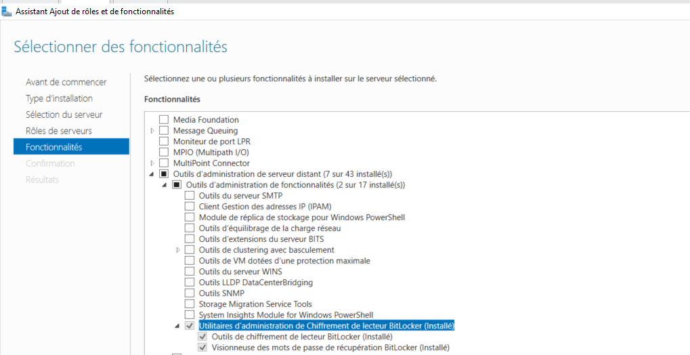
1.2 GPO :
1.2.1 Définir l'algorithme de chiffrement :
Voici le chemin du paramètre de sécurité : Configuration Ordinateur -> Stratégies -> Modèles d’administration -> Composants Windows -> Chiffrement de lecteur BitLocker
Modifier le paramètre : Choisir la méthode et la puissance de chiffrement des lecteurs (Windows 10 [Version 1511] et ultérieur).
Pour le définir comme ceci : 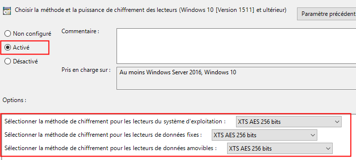
1.2.2 Définir les lecteurs chiffrés :
Voici le chemin du paramètre de sécurité : Configuration Ordinateur -> Stratégies -> Modèles d’administration -> Composants Windows -> Chiffrement de lecteur BitLocker -> Lecteurs du système d'exploitation.
Modifier le paramètre : Sélectionner la méthode de récupération des lecteurs amovibles protégés par BitLocker.
Pour le définir comme ceci : 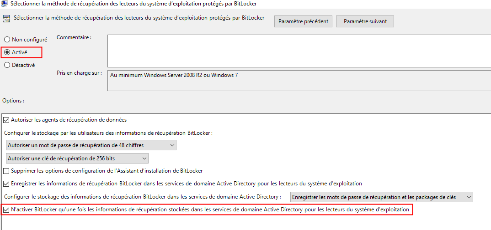
Ce paramètre permet de sauvegarder dans Active Directory uniquement pour le lecteur ou l'OS est installé (par défaut C:) :
- Les mots de passe de récupération,
- Les packages de clés,
Mais il est possible de sauvegarder Les mots de passe de récupération et Les packages de clés des lecteurs amovibles et fixes via le chemins :
-
Configuration Ordinateur -> Stratégies -> Modèles d’administration -> Composants Windows -> Chiffrement de lecteur BitLocker -> Lecteurs de données fixes,
-
Configuration Ordinateur -> Stratégies -> Modèles d’administration -> Composants Windows -> Chiffrement de lecteur BitLocker -> Lecteurs de données amovibles,
1.2.3 Restreindre le dévérouillage par clé USB au démarrage :
Voici le chemin du paramètre de sécurité : Configuration Ordinateur -> Stratégies -> Modèles d’administration -> Composants Windows -> Chiffrement de lecteur BitLocker -> Lecteurs du système d'exploitation
Modifier le paramètre : Exiger une authentification supplémentaire au démarrage.
Pour le définir comme ceci : 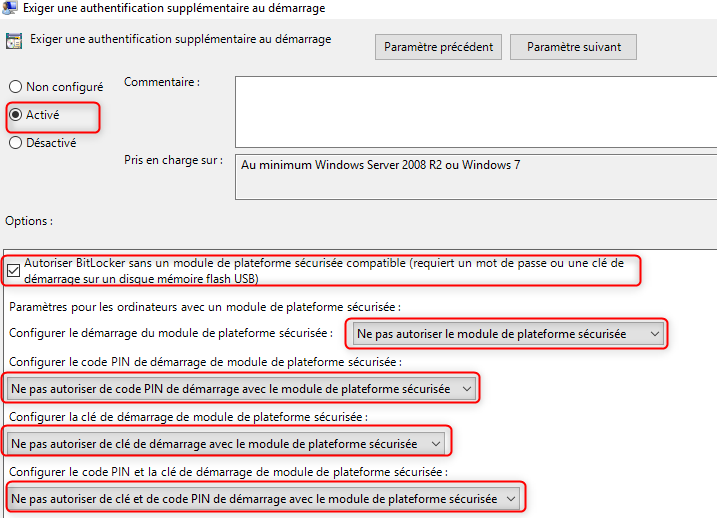
2 Configuration sur les postes :
Sur les postes forcer la mise à jour des startégies de groupes :
gpupdate /force
Insérer une clé USB dans le client.
Puis suivre cette procédure :
 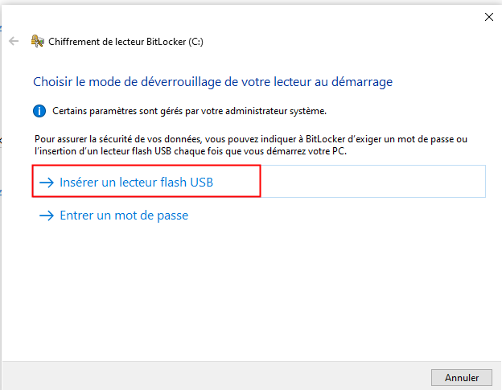
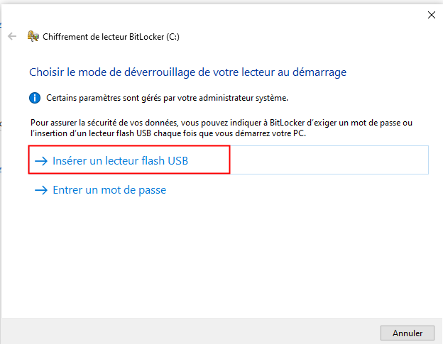

 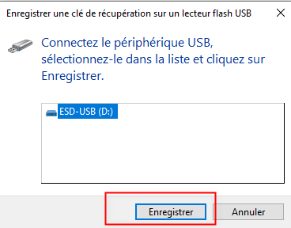
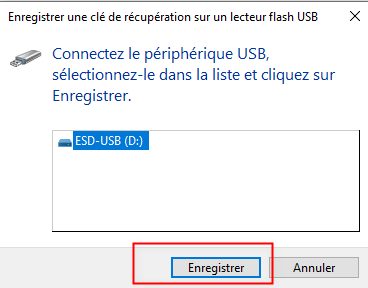

 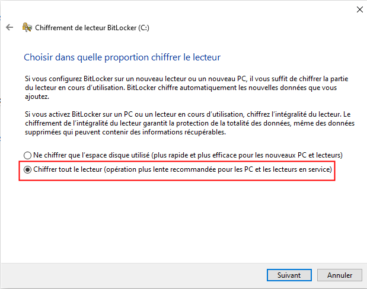
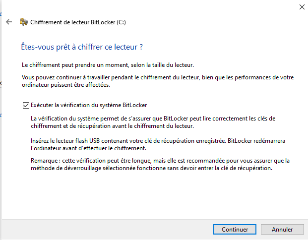
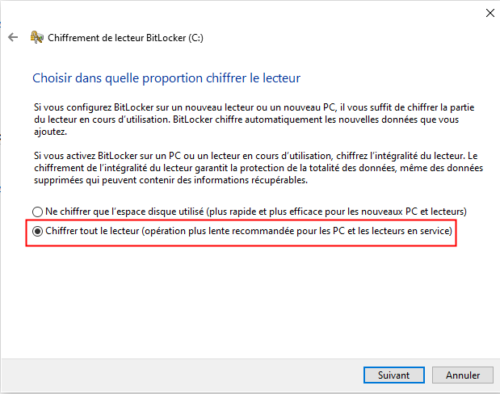
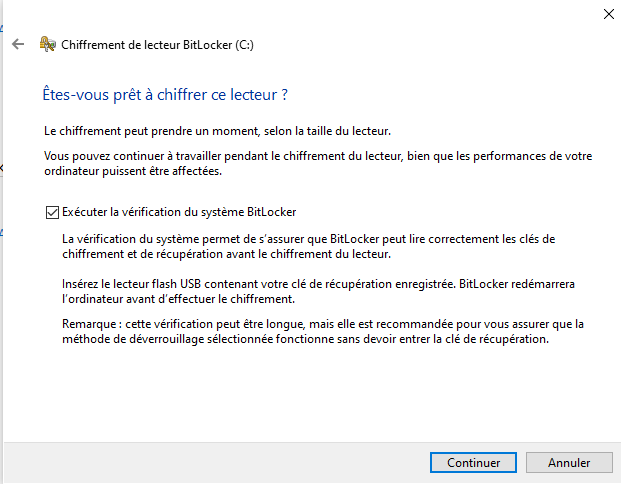
Dans la console de l'Active Directory Utilisateur et Ordinateur, il est possible de voir dans l'onglet Récupération Bitlocker la clé de récupération remontée par l'agent : 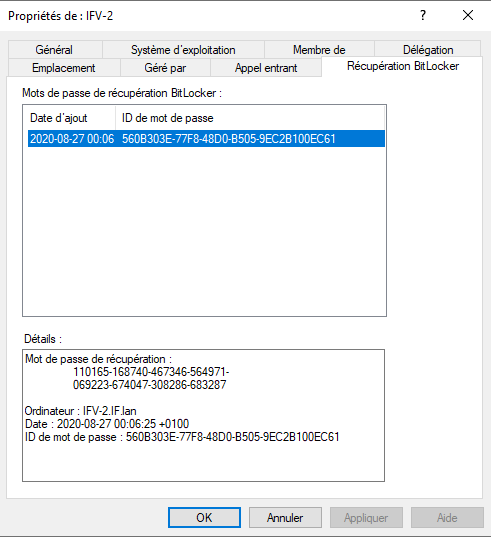